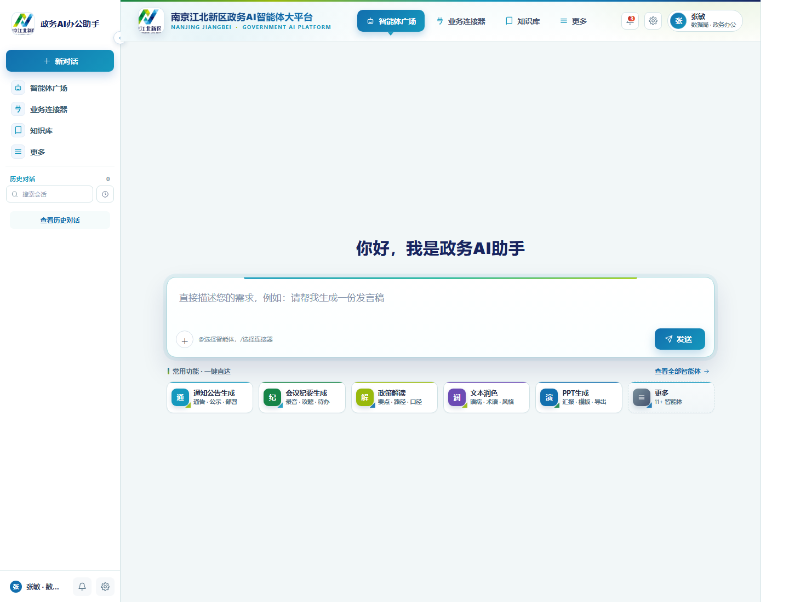
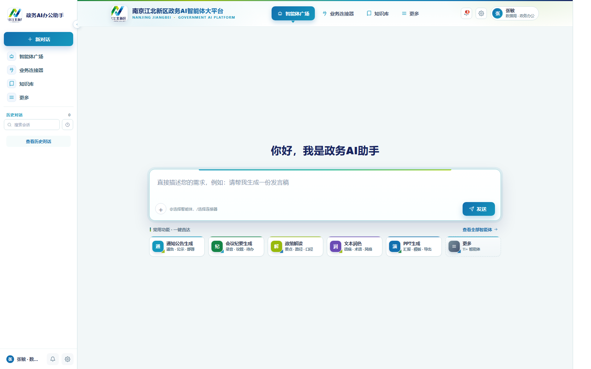

按江北新区 logo 的几何三角设计语言，重构首页顶部品牌区与快捷操作区，提升专业感与视觉平衡（黄金比例划分）


江北新区 logo + 平台名 + 英文副标，顶部 3px 品牌色渐变条（绿→黄绿→青→深海军蓝）
智能体广场 / 业务连接器 / 知识库 / 更多，激活态带渐变背景 + 下方三角指示器
通知（红点 badge）+ 个性化 + 用户胶囊（头像 + 姓名 + 部门角色）
通知公告生成 / 会议纪要生成 / 政策解读 / 文本润色 / PPT 生成 / 更多，总宽与对话框一致
背景低透明度 SVG 三角，呼应 logo 设计语言；按钮图标右下角小三角点缀
顶部品牌区 ≈ 0.382，主体内容 ≈ 0.618，提升视觉平衡感